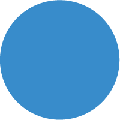

Plano PI Digital
Documentação
ÚLTIMA ATUALIZAÇÃO
05/11/2019
Impacto dos Riscos Mapeados
Insuficiência de Profissionais
<
Inexperiência na Realização de Hackathons

Início
Plano
Compromisso
Governança
Cronograma
Seleção
Riscos
Atendimento
Carta
Diagnóstico
Fluxo de Retribuições
Comunicação
Usabilidade do Portal
Minha Primeira Patente
Interoperabilidade
Login Único
ConectaGov
Infraestrutura
Módulo E-Chip